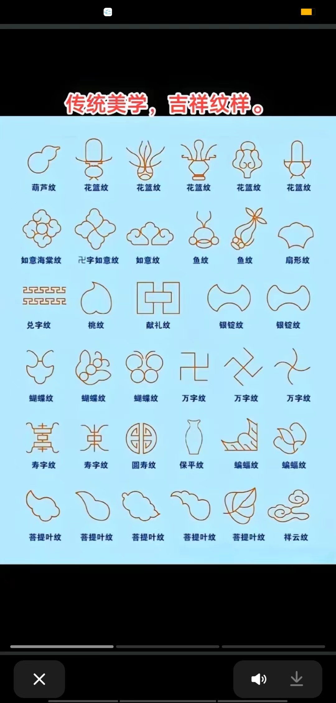
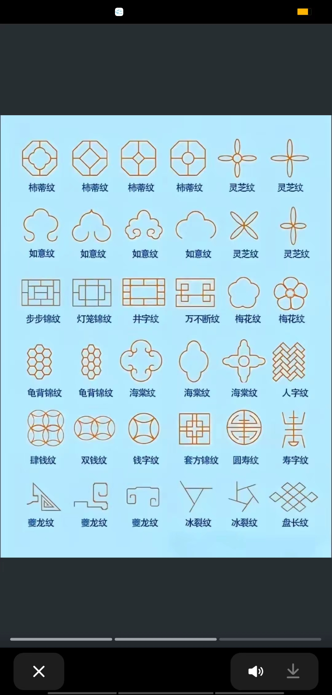
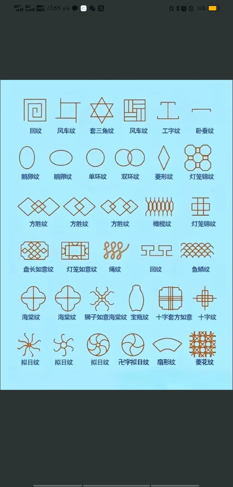

传统纹样剪纸教程
学习中国传统纹样的剪纸技巧，掌握基本的纹样创作方法。
传统纹样简介
中国传统纹样是剪纸艺术中最具特色的元素之一，包括几何纹样、植物纹样和吉祥纹样等。通过学习这些基本纹样，我们可以更好地理解和传承传统剪纸艺术。
基础纹样类型
几何纹样
最基础的纹样类型，包括方形、圆形、三角形等基本图形的组合。
- 对折纸张成对称形状
- 画出基本几何图形
- 按线条剪切，注意保持对称
植物纹样
模仿自然界的植物形态，如花卉、叶子等图案。
- 选择对称折叠方式
- 绘制植物基本轮廓
- 由外向内逐步剪切
吉祥纹样
具有传统文化寓意的图案，如福字、喜字等。
- 准备纹样模板
- 转印到剪纸上
- 细致剪切各个部分
纹样制作技巧
🔍 对称处理
- 根据纹样类型选择合适的折叠方式
- 确保折痕清晰，对齐准确
- 剪切时注意保持对称性
✂️ 剪切顺序
- 先剪大面积，后剪细节
- 由外向内逐步推进
- 注意保留连接点
📐 比例控制
- 注意整体布局的平衡
- 控制纹样的疏密程度
- 保持图案的协调性
练习建议
🎯 循序渐进
从简单的几何纹样开始，逐步过渡到复杂的植物和吉祥纹样
📝 临摹练习
可以先临摹传统纹样，理解其构图和制作方法
🔄 重复训练
反复练习同一类型的纹样，直到熟练掌握
传统纹样实例

传统花卉纹样解析
设计特点
- 对称布局：八瓣花形构成主体，体现完美对称美
- 层次分明：内外花瓣错落有致，营造立体感
- 细节丰富：花蕊、叶脉等精细装饰，增添生动感
- 虚实结合：实心花瓣与镂空装饰相得益彰
制作要点
- 先将纸张对折成八等分，确保对称性
- 从外层花瓣开始，由大到小逐层剪切
- 注意保持花瓣的曲线流畅自然
- 装饰性纹路要细腻精准，注意力度控制
- 展开时轻柔，避免撕裂连接处

传统几何纹样解析
设计特点
- 几何构成：方圆结合，体现阴阳平衡
- 规律排列：中心对称布局，严谨有序
- 虚实结合：实线与虚线交错，富有韵律
- 装饰变化：角部曲线装饰，打破刚性
制作要点
- 准确对折出中心点和对称轴
- 先剪切主体轮廓，再处理内部结构
- 虚线部分注意保持间距均匀
- 装饰性曲线要流畅自然
- 注意保持整体的平衡感

传统祥云纹样解析
设计特点
- 曲线优美：祥云造型流畅自然，富有动感
- 层次丰富：主次云纹交错，立体感强
- 细节精致：卷云纹理细腻，韵味十足
- 寓意深远：祥云图案象征吉祥如意
制作要点
- 对折纸张确保左右对称
- 主体云纹要圆润流畅
- 装饰性卷云由大到小层层剪切
- 注意保持纹理的连贯性
- 展开时动作要轻柔
创作建议
🎨 设计阶段
- 深入理解传统纹样的文化内涵
- 在传统基础上尝试创新变化
- 注意纹样的整体布局和节奏感
✂️ 制作阶段
- 选择合适的纸张材质和工具
- 保持耐心，细致处理每个细节
- 及时记录和总结制作经验